performance::r2_mcfadden(fit)Model Diagnostics
Psychological Sciences
Filippo Gambarota
University of Padova
Last modified: 12-12-2025
GLM - Diagnostic
GLM - Diagnostic
The diagnostic for GLM is similar to standard linear models. Some areas are more complicated for example residual analysis and goodness of fit. We will see:
- \(R^2\)
- Residuals
- Types of residuals
- Residual deviance
- Outliers and influential observations
\(R^2\)
Compared to the standard linear regression, there are multiple ways to calculate an \(R^2\) like measure for GLMs and there is no consensus about the most appropriate method. There are some useful resources:
- https://stats.oarc.ucla.edu/other/mult-pkg/faq/general/faq-what-are-pseudo-r-squareds/
To note, some measures are specific for the binomial GLM while other measures can be applied also to other GLMs (e.g., the poisson)
\(R^2\)
We will se:
- McFadden’s pseudo-\(R^2\) (for GLMs in general)
- Tjur’s \(R^2\) (only for binomial/binary models)
McFadden’s pseudo-\(R^2\)
The McFadden’s pseudo-\(R^2\) compute the ratio between the log-likelihood of the intercept-only (i.e., null) model and the current model(McFadden, 1987):
\[ R^2 = 1 - \frac{\log(\mathcal{L_{current}})}{\log(\mathcal{L_{null}})} \]
There is also the adjusted version that take into account the number of parameters of the model. In R can be computed manually or using the performance::r2_mcfadden():
Tjur’s \(R^2\)
This measure is the easiest to interpret and calculate but can only be applied for binomial binary models (Tjur, 2009). Is the absolute value of the difference between the proportions of correctly classifying \(y = 1\) and \(y = 0\) from the model:
\[ \begin{align*} \pi_0 = \frac{1}{n_0} \sum_{i = 1}^{n_0} \hat p_i \\ \pi_1 = \frac{1}{n_1} \sum_{i = 1}^{n_1} \hat p_i \\ R^2 = |\pi_1 - \pi_0| \end{align*} \]
performance::r2_tjur(fit)Residuals
Residuals in regression models represent the deviation of each observed value \(y_i\) from the fitted value \(\mu_i\) (remember that \(\mu_i = g^{-1}(\eta_i)\)).
This means that a large residuals (depending on the \(y\) scale and the expected error variance) indicate a problem with the model and/or with that specific observation.
We can identify three types of residuals:
- raw residuals
- standardized residuals
- studentized residuals
Raw residuals
Is the basic type of residual, that is very common in Gaussian linear models:
\[ r_i = y_i - \mu_i \]
With \(\mu_i = g^{-1}(\eta_i)\). That is the observed value in the raw scale minus the predicted value from the model in the raw scale (i.e., after inverting the link function).
Raw residuals are problematic in GLMs
The problem with raw residuals is that, given the mean-variance relationship the same distance from the fitted value is intepreted differently depending on the fitted value itself.
In standard linear models, \(\mu\) and \(\sigma^2\) are independent and \(\sigma^2\) is constant. This means that for each \(\mu_i\) the expected variance is always \(\sigma^2\).
In non Gaussian GLMs, the variance increases with the mean. For example in Poisson models, \(\mbox{var}(\mu_i) = \mu_i\).
Raw residuals are problematic in GLMs
This plot1 shows an example with the same residual for two different \(x\) values on a Poisson GLM. Beyond the model itself, the same residual can be considered as extreme for low \(x\) values and plausible for high \(x\) values:
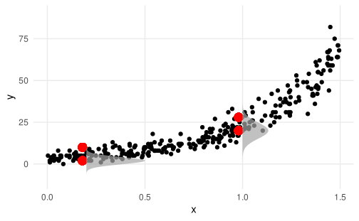
Pearson residuals
To take into account the mean-variance relationship we can divide each raw residual by the expected variance at that specific level:
\[ r_{P_i} = \frac{r_i}{\sqrt{\mbox{var}(\mu_i)}} \]
This is in fact, reducing the residuals when the variance is large, stabilizing the mean-variance relationship.
Pearson residuals, example
plot about before and after stabilizing
Deviance residuals
Deviance residuals are similar to the Pearson residuals:
\[ r_{Ð_i} = \mbox{sign}(y_i - \mu_i) \sqrt{d(y_i, \mu_i)} \]
Deviance residuals are the default in R when using the residuals() function. When using lm (i.e., the Gaussian GLM) raw residuals are computed by default.
Quantile residuals
This is a less common type of residuals but very promising. Dunn & Smyth (1996) is the first paper proposing the idea and expanded with examples in Dunn & Smyth (2018).
The idea is the following:
- take the Cumulative Density Function (CDF) of the chosen random component (e.g., Poisson) considering the systematic component and estimated parameters
- map each observed value on the CDF thus finding a value between 0 and 1
- convert the CDF value into a standard normal CDF. This in fact transform values into \(z\) scores
Quantile residuals
If everything is well specified (random component, link function, systematic component, etc.), the residuals are normally distributed.
The quantile residuals are particularly useful with discrete responses (e.g., Poisson or Binomial) where other residuals patterns could be confounded by the nature of the variable.
The process of calculating quantile residuals for discrete random variables is a little bit more complex but clearly described in Dunn & Smyth (2018, pp. 301–304).
Quantile residuals, formally
\[ r_{Q_i} = \Phi^{-1}\{\mathcal{F}\;(y_i\;; \mu_i, \phi)\} \]
Where \(\Phi\) is the CDF of the standard normal distribution (qnorm in R)
Quantile residuals, an example
Let’s use a Gamma distribution as an example:
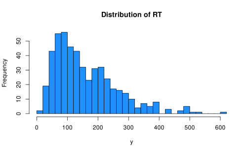
Quantile residuals, an example
We want to see if y is related to x, a variable between 0 and 1:
scatter.smooth(x, y, pch = 19, col = scales::alpha("black", 0.2), main = "y ~ x")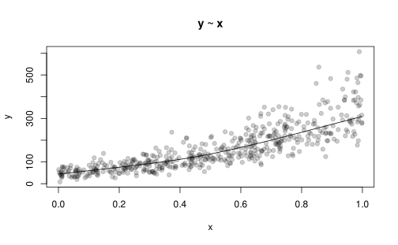
Probably yes!
Quantile residuals, an example
Assume that we know is a Gamma distribution thus we use a Gamma GLM:
#>
#> Call:
#> glm(formula = y ~ x, family = Gamma(link = "log"))
#>
#> Coefficients:
#> Estimate Std. Error t value Pr(>|t|)
#> (Intercept) 3.90330 0.02837 137.57 <2e-16 ***
#> x 2.00596 0.04876 41.14 <2e-16 ***
#> ---
#> Signif. codes: 0 '***' 0.001 '**' 0.01 '*' 0.05 '.' 0.1 ' ' 1
#>
#> (Dispersion parameter for Gamma family taken to be 0.09556536)
#>
#> Null deviance: 202.939 on 499 degrees of freedom
#> Residual deviance: 48.715 on 498 degrees of freedom
#> AIC: 5142.7
#>
#> Number of Fisher Scoring iterations: 4Quantile residuals, an example
Firsly let’s use the Gamma CDF that is pgamma in R to compute the cumulative probability of each \(y_i\):
Quantile residuals, an example
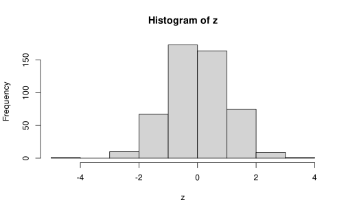
Quantile residuals, an example
The residuals can be directly calculated using the statmod::qresid() function (the package from the Dunn & Smyth (2018) book) and they match our calculation:
#> 1 2 3 4 5 6 7
#> 0.1641196 -0.4459411 -1.4659977 -0.6320657 0.6347470 1.1372092 -1.0610529
#> 8 9 10
#> 0.5660843 0.6160270 1.0011647z[1:10] # our manual calculation#> [1] 0.1641196 -0.4459411 -1.4659977 -0.6320657 0.6347470 1.1372092
#> [7] -1.0610529 0.5660843 0.6160270 1.0011647Quantile residuals, DHARMa package
The DHARMa package is a modern R package based on the idea of Quantile residuals. The package supports several models including (generalized) linear mixed-effects models.
In fact, the package used a simulation-based version of Quantile residuals but the idea is very similar. See the documentation for more details.
library(DHARMa)
plot(simulateResiduals(fit))Quantile residuals, DHARMa package
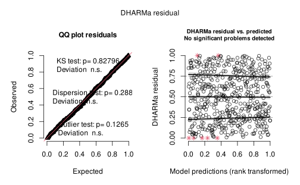
Standardized residuals and the matrix
All the previous types of residuals can be considered raw. We can compute the standardized version of the previous residuals by using the so-called hatvalues. The matrix algebra is beyond my expertise so I can give you the intuition about the hat matrix.
The hat matrix \(\mathop{\mathbf{H}}\underset{n \times n}{}\) is calculated as \(\mathbf{H} = \mathbf{X} \left(\mathbf{X}^{\top} \mathbf{X} \right)^{-1} \mathbf{X}^{\top}\) where \(\mathop{\mathbf{X}}\underset{n \times p'}{}\) is the model matrix.
The hatvalues \(h_{ii}\) (\(i = 1, \dots, n\)) are the diagonal elements of \(\mathop{\mathbf{H}}\underset{n \times n}{}\).
The hatvalues \(h_{ii}\)
The hatvalues \(h_{ii}\) represent the influence of the \(i\) observation on the fitted value \(\mu_i\). A large hatvalue means that this specific observation has predictors with a large influence on the fitted value. They are also called leverage points because they influence the regression line.
- \(h_{ii}\) ranges between 0 and 1
- The sum of all hatvalues is the number of parameters \(\sum_{i = 1}^n h_{ii} = p'\)
hatvalues is simple linear regression
Equation for hatvalues in simple linear regression (\(\mu_i = \beta_0 + \beta_1x_{1i}\)) reduces to:
\[ h_i = \frac{1}{n} + \frac{(x_i - \bar x)^2}{\sum^n_{j = 1}(x_i - \bar x)^2} \]
We use the simple linear regression as a toy example to have an intuition about hatvalues.
hatvalues is simple linear regression
The first term is the contribution of the intercept:
\[ h_i = {\color{red}{\frac{1}{n}}} + \frac{(x_i - \bar x)^2}{\sum_{j=1}^n (x_j - \bar x)^2} \]
If no predictors are added into the model there are no leverage points. Each datapoint contribute equally. We have \(p' = 1\) so each observation has \(p'/n\) influence.
hatvalues is simple linear regression
The second term is the contribution of the slope, the effect of \(x\):
\[ h_i = \frac{1}{n} + {\color{red}{\frac{(x_i - \bar x)^2}{\sum_{j=1}^n (x_j - \bar x)^2}}} \]
The equation is just the squared residual of \(x_i\) from the mean, rescaled by the total sum of squares. How far is \(x_i\) from the mean.
hatvalues is simple linear regression
This is the intercept-only model. No leverage because we are omitting \(x\). The values of \(x\) have no influence on the slope that is 0 by definition.
hatvalues is simple linear regression
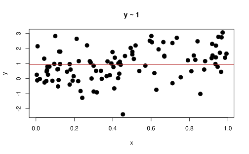
hatvalues is simple linear regression
When including the predictor \(x\) each observation \(x_i\) try to pull toward themselves the regression line. Some observations have a greater leverage and these observations are far from the mean of \(x\).
dat <- data.frame(
x, y, h = hatvalues(fit1)
)
ggplot(dat, aes(x = x, y = y)) +
geom_point(size = 3, aes(color = h)) +
geom_vline(xintercept = mean(x), lty = "dotted") +
geom_smooth(method = "lm", se = FALSE) +
labs(
color = latex2exp::TeX("$h_{ii}$")
)hatvalues is simple linear regression
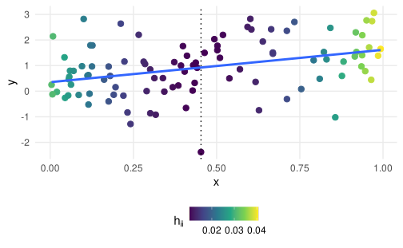
hatvalues and residuals
What is the point about residuals? If observations with a large \(h_{ii}\) pull the regression line toward themselves, this means the on average the residuals are lower for values with high leverage.
Same model as before but with more obervations to show the pattern:
hatvalues and residuals

hatvalues and standardized residuals
If we divide the residuals using \(1 - h_{ii}\) (or better \(\sqrt{1 - h_{ii}}\)) we can stabilize this pattern and make residuals comparable taking into account the leverage.
Dividing each residual by each own leverage will make the residual variance homogeneous across all residuals, regardless the actual leverage.
In R there is the hatvalues() function to extract the diagonal of the \(\mathbf{H}\) matrix and rstandard() to compute the standardized residuals.
Checking the systematic component
This is a simulated example where the true model contains a systematic component with \(\beta_0 + \beta_1 x_1 + \beta_2 x^2_1\) and we fit the model with and without the systematic component:
Checking the systematic component
Firstly you can plot residuals against fitted values. Better using standardized Pearson, Deviance or Quantile residuals. car for example uses the raw Pearson residuals as default.
car::residualPlots(fit_x)#> Test stat Pr(>|Test stat|)
#> x 9.3063 < 2.2e-16 ***
#> Tukey test 9.3063 < 2.2e-16 ***
#> ---
#> Signif. codes: 0 '***' 0.001 '**' 0.01 '*' 0.05 '.' 0.1 ' ' 1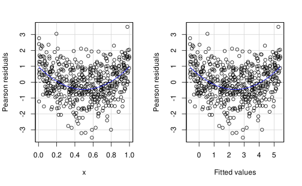
Checking the systematic component
Then we can plot each predictor against residuals. A pattern here could be caused by a misspesification of the predictor (e.g., linear instead of quadratic).
Checking the systematic component
par(mfrow = c(1, 2))
scatter.smooth(x,
residuals(fit_x),
lpars = list(col = "red", lwd = 3),
xlab = "x",
ylab = "Residuals",
main = "y ~ x")
scatter.smooth(x,
residuals(fit_x2),
lpars = list(col = "red", lwd = 3),
xlab = "x",
ylab = "Residuals",
main = latex2exp::TeX("$y \\sim x + x^2$", bold = TRUE))Checking the systematic component
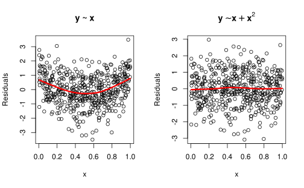
Checking the systematic component
Or a complete check with performance::check_model():
performance::check_model(fit_x)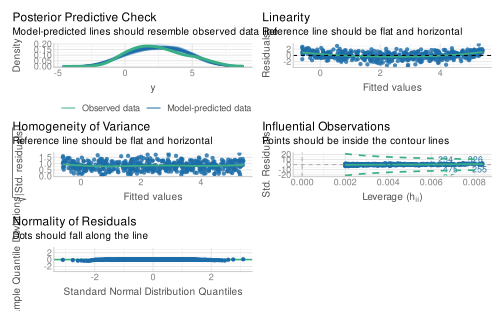
Checking the systematic component
performance::check_model(fit_x2)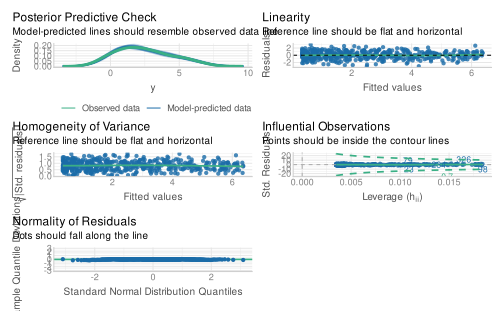
Checking the systematic component
As a general principle, after using the appropriate residuals (i.e., correcting for the mean-variance relationship and maybe standardizing) fitted againsts residuals and predictors against residuals should apper as a flat relationship with approximately constant variance.
Outliers and influential observations
Outliers
We introduced the concept of leverage in the previous slides as an obervation with a extreme \(x_i\) value.
An outlier is an observation with a large residual thus the extremeness is about \(y_i\) (or better the distance between \(y_i\) and and corresponding fitted value \(\mu_i\))
Methods for assessing outliers have in common the following principle:
How the model change in terms of goodness-of-fit when a certain observation is removed/included?
Are outliers always problematic?
Outliers are observation that are inconsistent with the fitted model producing large residuas.
An influential observation is an outlier with high leverage. A value with high leverage is a value that could, in principle, pull the regression line.
In addition, a value that is also inconsistent with \(y\) have also larger power of pulling the regression line.
When we remove an influential observation from the model, we can have a visible impact on the model fit.
Outlier vs leverage vs influential
Let’s visually illustrate the difference between the three concepts. Again let’s simulate a simple linear regression without any outlier or influential point:
Outlier vs leverage vs influential
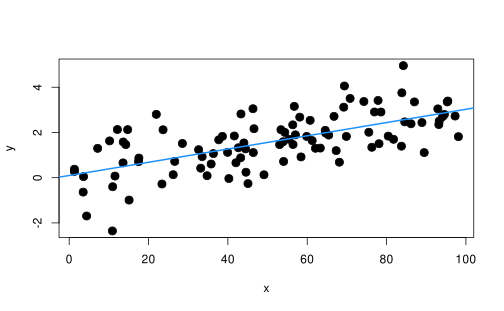
No outlier, high leverage
Let’s add a point with very high leverage but still consistent with the model. Remember that a point with high leverage is only extreme on \(x\). Despite the high leverage the impact on the model fit, slope and so on is very limited:
leverage <- data.frame(
y = NA,
x = with(dat, mean(x) + 5 * sd(x)), # 5 standard deviation away
problem = "leverage"
)
leverage$y <- 0.3 * 0.1 * leverage$x + rnorm(1) # simulate from the same model
dat <- rbind(dat, leverage)
with(dat, plot(x, y, pch = 19, cex = 1.5, main = "without high leverage (red), full dataset (blue)"), col = ifelse(dat$problem == "none", 1, 2))
with(dat, abline(lm(y ~ x), col = "dodgerblue", lwd = 2))
with(dat[dat$problem == "none", ], abline(lm(y ~ x), col = "red", lwd = 2))No outlier, high leverage
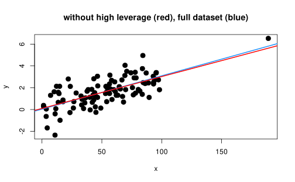
Outlier, low leverage
Now we simulate an observation with a very large outlier but with small leverage. Still the impact on the fitted regression line is minimal.
out <- data.frame(
y = with(dat, mean(y) + sd(y) * 4),
x = mean(dat[dat$problem == "none", "x"]),
problem = "outlier"
)
dat <- rbind(dat, out)
dat_out <- dat[dat$problem != "leverage", ]
with(dat_out, plot(x, y, pch = 19, cex = 1.5, main = "without high outlier (red), full dataset (blue)"))
points(dat_out$x[dat_out$problem == "outlier"], dat_out$y[dat_out$problem == "outlier"], col = "red", pch = 19, cex = 1.8)
with(dat_out, abline(lm(y ~ x), col = "dodgerblue", lwd = 2))
with(dat_out[dat_out$problem == "none", ], abline(lm(y ~ x), col = "red", lwd = 2))Outlier, low leverage
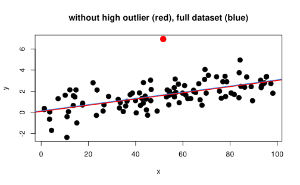
High leverage and outlier
This is the deadly combination. We can combine the two previous simulations to show the actual impact. Clearly this is an extreme example:
influential <- leverage
influential$y <- max(dat$y) + sd(dat$y) * 4 # extreme on y and x
influential$problem <- "influential"
dat <- rbind(dat, influential)
dat_inf <- dat[dat$problem %in% c("none", "influential"), ]
with(dat_inf, plot(x, y, pch = 19, cex = 1.5, col = ifelse(problem == "none", 1, 2), main = "without influential (red), full dataset (blue)"))
with(dat_inf, abline(lm(y ~ x), col = "dodgerblue", lwd = 2))
with(dat_inf[dat_inf$problem == "none", ], abline(lm(y ~ x), col = "red", lwd = 2))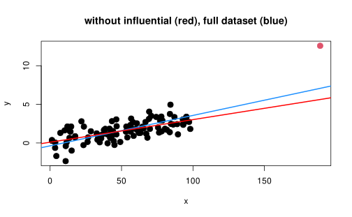
Identification of influential observation
Identification of influential observation and outliers of GLMs is very similar to standard regression models. We will briefly see:
- Cook Distances
- DFBETAs
Cook Distances
The Cook Distance of an observation \(i\) measured the impact of that observation on the overall model fit. If removing the observation \(i\) has an high impact, the observation \(i\) is likely an influential observation. For GLMs they are defined as:
\[ \begin{align*} D_i = \frac{r_i^2}{\phi p} \frac{h_{ii}}{1 - h_{ii}} \end{align*} \]
Where \(p\) is the number of model parameters, \(r_i\) are the standardized pearson residuals (rstandard(fit, type = "pearson")) and \(h_{ii}\) are the hatvalues (leverages). \(\phi\) is the dispersion parameter of the GLM that for binomial and poisson models is fixed to 1 (see Dunn (2018, Table 5.1)) Usually an observation is considered influential if \(D_i > \frac{4}{n}\) where \(n\) is the sample size.
DFBETAs
DFBETAs measure the impact of the observation \(i\) on the estimated parameter \(\beta_j\):
\[ \begin{align*} DFBETAS_i = \frac{\beta_j - \beta_{j(i))}}{\sigma_{\beta_{j(i)}}} \end{align*} \]
Where \(i\) denote the parameters and standard error on a model fitted without the \(i\) observation1. Usually an observation is considered influential if \(|DFBETAs_{i}| > \frac{2}{\sqrt{n}}\) where \(n\) is the sample size.
In R
Both (and other) measures can be extracted using specific functions e.g. cooks.distance() or dfbetas(). For a complete overview of influence measures you can use the influence.measures() function in R.
data("teddy")
fit_teddy <- glm(Depression_pp01 ~ Parental_stress, data = teddy, family = binomial(link = "logit"))
head(influence.measures(fit_teddy))#> $infmat
#> dfb.1_ dfb.Prn_ dffit cov.r cook.d hat
#> 1 0.0071849981 -0.0173193490 -0.04537634 1.0067587 0.0004063230 0.004084333
#> 2 -0.0254704180 0.0214307863 -0.02933279 1.0080221 0.0001614375 0.003853356
#> 3 0.0099899318 -0.0204917572 -0.04778173 1.0069663 0.0004519238 0.004379419
#> 4 0.0571584327 -0.0729491889 -0.09444160 1.0128195 0.0018466472 0.011451225
#> 5 -0.0102528738 0.0026940961 -0.03321539 1.0061581 0.0002131258 0.002864684
#> 6 -0.0184601360 0.0124485309 -0.03021703 1.0065768 0.0001741484 0.002905165
#> 7 0.0829817671 -0.0559584770 0.13583122 0.9751336 0.0122579050 0.002905165
#> 8 -0.0025819407 -0.0061861784 -0.03782411 1.0062477 0.0002791452 0.003246194
#> 9 -0.0046844951 -0.0037670591 -0.03641946 1.0061903 0.0002581212 0.003112614
#> 10 -0.0133940168 0.0063849558 -0.03179999 1.0062365 0.0001944657 0.002809401
#> 11 -0.0263730581 0.0228005187 -0.02915001 1.0085107 0.0001588053 0.004219907
#> 12 -0.0133940168 0.0063849558 -0.03179999 1.0062365 0.0001944657 0.002809401
#> 13 -0.0118776242 0.0045981196 -0.03244435 1.0061884 0.0002028782 0.002827156
#> 14 -0.0221180138 0.0169784504 -0.02962733 1.0070892 0.0001662138 0.003200552
#> 15 -0.0213223146 0.0159758127 -0.02971956 1.0069493 0.0001675374 0.003112472
#> 16 -0.0003484652 -0.0087460279 -0.03941422 1.0063314 0.0003039284 0.003408266
#> 17 -0.0258217751 0.0219435656 -0.02928161 1.0081851 0.0001606565 0.003974372
#> 18 -0.0213223146 0.0159758127 -0.02971956 1.0069493 0.0001675374 0.003112472
#> 19 -0.2346770489 0.2732215520 0.30488350 1.0178782 0.0301842219 0.028670427
#> 20 0.0099899318 -0.0204917572 -0.04778173 1.0069663 0.0004519238 0.004379419
#> 21 -0.0261217450 0.0223991757 -0.02922132 1.0083481 0.0001597858 0.004096779
#> 22 -0.0254704180 0.0214307863 -0.02933279 1.0080221 0.0001614375 0.003853356
#> 23 -0.0025819407 -0.0061861784 -0.03782411 1.0062477 0.0002791452 0.003246194
#> 24 0.3678732380 -0.4071298736 -0.42522829 1.0753667 0.0477099913 0.075972666
#> 25 -0.0221180138 0.0169784504 -0.02962733 1.0070892 0.0001662138 0.003200552
#> 26 -0.0213223146 0.0159758127 -0.02971956 1.0069493 0.0001675374 0.003112472
#> 27 -0.0161187327 0.0096248657 -0.03083648 1.0063799 0.0001820849 0.002826907
#> 28 -0.0234931235 0.0187464463 -0.02950336 1.0073861 0.0001642885 0.003398402
#> 29 0.1341900735 -0.1102969127 0.16045744 0.9719774 0.0203945981 0.003618431
#> 30 -0.0184601360 0.0124485309 -0.03021703 1.0065768 0.0001741484 0.002905165
#> 31 0.1030914602 -0.0772416074 0.14369137 0.9739058 0.0146370814 0.003112472
#> 32 -0.0221180138 0.0169784504 -0.02962733 1.0070892 0.0001662138 0.003200552
#> 33 -0.0234931235 0.0187464463 -0.02950336 1.0073861 0.0001642885 0.003398402
#> 34 -0.0184601360 0.0124485309 -0.03021703 1.0065768 0.0001741484 0.002905165
#> 35 -0.1227245214 0.1586832604 0.20993934 0.9941360 0.0177598929 0.010571971
#> 36 0.0011951972 0.0299979081 0.13518641 0.9806907 0.0096864906 0.003408266
#> 37 -0.0213223146 0.0159758127 -0.02971956 1.0069493 0.0001675374 0.003112472
#> 38 0.0168837833 0.0135771750 0.13126244 0.9795034 0.0095012920 0.003112614
#> 39 0.0623629570 -0.0786714496 -0.09989272 1.0136459 0.0020753131 0.012390393
#> 40 0.0246075270 0.0054817991 0.13000757 0.9789459 0.0095093193 0.003005691
#> 41 -0.0046844951 -0.0037670591 -0.03641946 1.0061903 0.0002581212 0.003112614
#> 42 -0.0265783501 0.0231503987 -0.02906621 1.0086721 0.0001577001 0.004343136
#> 43 -0.0213223146 0.0159758127 -0.02971956 1.0069493 0.0001675374 0.003112472
#> 44 -0.0184601360 0.0124485309 -0.03021703 1.0065768 0.0001741484 0.002905165
#> 45 -0.0267401627 0.0234515231 -0.02896885 1.0088319 0.0001564598 0.004465892
#> 46 -0.0067605307 0.0383135103 0.13783767 0.9813240 0.0098752268 0.003600703
#> 47 -0.0228404774 0.0179007923 -0.02955760 1.0072351 0.0001651581 0.003296214
#> 48 0.0071849981 -0.0173193490 -0.04537634 1.0067587 0.0004063230 0.004084333
#> 49 -0.0204498624 0.0148891700 -0.02984234 1.0068165 0.0001692245 0.003033088
#> 50 -0.2826557470 0.3215429872 0.34725480 1.0348055 0.0357003180 0.042407385
#> 51 0.0264394479 -0.0389427484 -0.06313321 1.0085815 0.0008023213 0.006466541
#> 52 -0.0173353358 0.0110866170 -0.03049024 1.0064724 0.0001776592 0.002859157
#> 53 -0.0263730581 0.0228005187 -0.02915001 1.0085107 0.0001588053 0.004219907
#> 54 -0.0025819407 -0.0061861784 -0.03782411 1.0062477 0.0002791452 0.003246194
#> 55 -0.0025819407 -0.0061861784 -0.03782411 1.0062477 0.0002791452 0.003246194
#> 56 -0.0213223146 0.0159758127 -0.02971956 1.0069493 0.0001675374 0.003112472
#> 57 -0.0265783501 0.0231503987 -0.02906621 1.0086721 0.0001577001 0.004343136
#> 58 -0.0194970410 0.0137147126 -0.03000479 1.0066919 0.0001713856 0.002963574
#> 59 -0.0133940168 0.0063849558 -0.03179999 1.0062365 0.0001944657 0.002809401
#> 60 0.0045301978 -0.0143076219 -0.04318359 1.0065850 0.0003669120 0.003825414
#> 61 -0.0250648471 0.0208578363 -0.02937724 1.0078600 0.0001621546 0.003734452
#> 62 -0.0258217751 0.0219435656 -0.02928161 1.0081851 0.0001606565 0.003974372
#> 63 -0.0265783501 0.0231503987 -0.02906621 1.0086721 0.0001577001 0.004343136
#> 64 -0.0066607874 -0.0014838183 -0.03519057 1.0061574 0.0002403856 0.003005691
#> 65 0.0428066088 -0.0571169621 -0.07957613 1.0106860 0.0012944185 0.008987274
#> 66 0.0829817671 -0.0559584770 0.13583122 0.9751336 0.0122579050 0.002905165
#> 67 -0.1394247684 0.1758856408 0.22332999 0.9967498 0.0194395099 0.012390393
#> 68 -0.0118776242 0.0045981196 -0.03244435 1.0061884 0.0002028782 0.002827156
#> 69 -0.0267401627 0.0234515231 -0.02896885 1.0088319 0.0001564598 0.004465892
#> 70 0.0020206541 -0.0114515199 -0.04119828 1.0064432 0.0003329921 0.003600703
#> 71 -0.0204498624 0.0148891700 -0.02984234 1.0068165 0.0001692245 0.003033088
#> 72 -0.0118776242 0.0045981196 -0.03244435 1.0061884 0.0002028782 0.002827156
#> 73 -0.0194970410 0.0137147126 -0.03000479 1.0066919 0.0001713856 0.002963574
#> 74 -0.0263730581 0.0228005187 -0.02915001 1.0085107 0.0001588053 0.004219907
#> 75 -0.0184601360 0.0124485309 -0.03021703 1.0065768 0.0001741484 0.002905165
#> 76 -0.0085154080 0.0006683291 -0.03412653 1.0061473 0.0002255142 0.002923629
#> 77 -0.0228404774 0.0179007923 -0.02955760 1.0072351 0.0001651581 0.003296214
#> 78 -0.0003484652 -0.0087460279 -0.03941422 1.0063314 0.0003039284 0.003408266
#> 79 -0.0263730581 0.0228005187 -0.02915001 1.0085107 0.0001588053 0.004219907
#> 80 -0.0246021385 0.0202216144 -0.02941794 1.0076994 0.0001628406 0.003618431
#> 81 -0.0267401627 0.0234515231 -0.02896885 1.0088319 0.0001564598 0.004465892
#> 82 -0.0261217450 0.0223991757 -0.02922132 1.0083481 0.0001597858 0.004096779
#> 83 -0.0265783501 0.0231503987 -0.02906621 1.0086721 0.0001577001 0.004343136
#> 84 -0.0221180138 0.0169784504 -0.02962733 1.0070892 0.0001662138 0.003200552
#> 85 -0.0148063246 0.0080590764 -0.03126860 1.0063008 0.0001876154 0.002809829
#> 86 -0.0173353358 0.0110866170 -0.03049024 1.0064724 0.0001776592 0.002859157
#> 87 -0.0213223146 0.0159758127 -0.02971956 1.0069493 0.0001675374 0.003112472
#> 88 -0.0025819407 -0.0061861784 -0.03782411 1.0062477 0.0002791452 0.003246194
#> 89 -0.0102528738 0.0026940961 -0.03321539 1.0061581 0.0002131258 0.002864684
#> 90 0.1030914602 -0.0772416074 0.14369137 0.9739058 0.0146370814 0.003112472
#> 91 -0.0270002552 0.0242192999 -0.02843235 1.0094454 0.0001500631 0.004942283
#> 92 -0.0194970410 0.0137147126 -0.03000479 1.0066919 0.0001713856 0.002963574
#> 93 0.0020206541 -0.0114515199 -0.04119828 1.0064432 0.0003329921 0.003600703
#> 94 0.0760493425 -0.0486364928 0.13375932 0.9755612 0.0116359654 0.002859157
#> 95 -0.0240792708 0.0195189188 -0.02945853 1.0075412 0.0001635356 0.003506120
#> 96 0.0193548156 -0.0310240628 -0.05631481 1.0078120 0.0006339100 0.005501443
#> 97 -0.0118776242 0.0045981196 -0.03244435 1.0061884 0.0002028782 0.002827156
#> 98 -0.0173353358 0.0110866170 -0.03049024 1.0064724 0.0001776592 0.002859157
#> 99 -0.0258217751 0.0219435656 -0.02928161 1.0081851 0.0001606565 0.003974372
#> 100 -0.0161187327 0.0096248657 -0.03083648 1.0063799 0.0001820849 0.002826907
#> 101 -0.0194970410 0.0137147126 -0.03000479 1.0066919 0.0001713856 0.002963574
#> 102 -0.0891578534 0.1240032050 0.18454690 0.9895756 0.0147033948 0.007623490
#> 103 0.1159026134 -0.0908364817 0.14998827 0.9731217 0.0166650433 0.003296214
#> 104 -0.0234931235 0.0187464463 -0.02950336 1.0073861 0.0001642885 0.003398402
#> 105 -0.0133940168 0.0063849558 -0.03179999 1.0062365 0.0001944657 0.002809401
#> 106 0.0618563990 -0.0336684127 0.13063087 0.9764512 0.0106394558 0.002809829
#> 107 -0.0213223146 0.0159758127 -0.02971956 1.0069493 0.0001675374 0.003112472
#> 108 -0.0269430567 0.0239178586 -0.02873065 1.0091447 0.0001535511 0.004707920
#> 109 -0.0261217450 0.0223991757 -0.02922132 1.0083481 0.0001597858 0.004096779
#> 110 -0.0213223146 0.0159758127 -0.02971956 1.0069493 0.0001675374 0.003112472
#> 111 -0.0392109048 0.0721544062 0.15261829 0.9841661 0.0112158036 0.004712645
#> 112 0.0071849981 -0.0173193490 -0.04537634 1.0067587 0.0004063230 0.004084333
#> 113 -0.0228404774 0.0179007923 -0.02955760 1.0072351 0.0001651581 0.003296214
#> 114 -0.0221180138 0.0169784504 -0.02962733 1.0070892 0.0001662138 0.003200552
#> 115 0.0428066088 -0.0571169621 -0.07957613 1.0106860 0.0012944185 0.008987274
#> 116 -0.0270002552 0.0242192999 -0.02843235 1.0094454 0.0001500631 0.004942283
#> 117 -0.0246021385 0.0202216144 -0.02941794 1.0076994 0.0001628406 0.003618431
#> 118 -0.1059499484 0.1413692734 0.19695760 0.9917497 0.0161735100 0.008987274
#> 119 -0.0392109048 0.0721544062 0.15261829 0.9841661 0.0112158036 0.004712645
#> 120 -0.0003484652 -0.0087460279 -0.03941422 1.0063314 0.0003039284 0.003408266
#> 121 -0.0184601360 0.0124485309 -0.03021703 1.0065768 0.0001741484 0.002905165
#> 122 -0.0066607874 -0.0014838183 -0.03519057 1.0061574 0.0002403856 0.003005691
#> 123 -0.0148063246 0.0080590764 -0.03126860 1.0063008 0.0001876154 0.002809829
#> 124 -0.0148063246 0.0080590764 -0.03126860 1.0063008 0.0001876154 0.002809829
#> 125 -0.0234931235 0.0187464463 -0.02950336 1.0073861 0.0001642885 0.003398402
#> 126 -0.0267401627 0.0234515231 -0.02896885 1.0088319 0.0001564598 0.004465892
#> 127 0.0571584327 -0.0729491889 -0.09444160 1.0128195 0.0018466472 0.011451225
#> 128 -0.0003484652 -0.0087460279 -0.03941422 1.0063314 0.0003039284 0.003408266
#> 129 -0.0265783501 0.0231503987 -0.02906621 1.0086721 0.0001577001 0.004343136
#> 130 -0.0133940168 0.0063849558 -0.03179999 1.0062365 0.0001944657 0.002809401
#> 131 -0.0263730581 0.0228005187 -0.02915001 1.0085107 0.0001588053 0.004219907
#> 132 0.0129499133 -0.0238299348 -0.05040418 1.0072097 0.0005044813 0.004712645
#> 133 -0.0263730581 0.0228005187 -0.02915001 1.0085107 0.0001588053 0.004219907
#> 134 -0.0254704180 0.0214307863 -0.02933279 1.0080221 0.0001614375 0.003853356
#> 135 -0.0204498624 0.0148891700 -0.02984234 1.0068165 0.0001692245 0.003033088
#> 136 0.0472460525 -0.0182901056 0.12905506 0.9773969 0.0099614449 0.002827156
#> 137 -0.0204498624 0.0148891700 -0.02984234 1.0068165 0.0001692245 0.003033088
#> 138 -0.0133940168 0.0063849558 -0.03179999 1.0062365 0.0001944657 0.002809401
#> 139 0.0071849981 -0.0173193490 -0.04537634 1.0067587 0.0004063230 0.004084333
#> 140 -0.0118776242 0.0045981196 -0.03244435 1.0061884 0.0002028782 0.002827156
#> 141 -0.0133940168 0.0063849558 -0.03179999 1.0062365 0.0001944657 0.002809401
#> 142 0.0618563990 -0.0336684127 0.13063087 0.9764512 0.0106394558 0.002809829
#> 143 0.0045301978 -0.0143076219 -0.04318359 1.0065850 0.0003669120 0.003825414
#> 144 -0.0025819407 -0.0061861784 -0.03782411 1.0062477 0.0002791452 0.003246194
#> 145 -0.0213223146 0.0159758127 -0.02971956 1.0069493 0.0001675374 0.003112472
#> 146 0.0193548156 -0.0310240628 -0.05631481 1.0078120 0.0006339100 0.005501443
#> 147 -0.0133940168 0.0063849558 -0.03179999 1.0062365 0.0001944657 0.002809401
#> 148 -0.0085154080 0.0006683291 -0.03412653 1.0061473 0.0002255142 0.002923629
#> 149 -0.0067605307 0.0383135103 0.13783767 0.9813240 0.0098752268 0.003600703
#> 150 0.0228096769 -0.0348902722 -0.05960917 1.0081748 0.0007127062 0.005960973
#> 151 -0.0263730581 0.0228005187 -0.02915001 1.0085107 0.0001588053 0.004219907
#> 152 -0.0234931235 0.0187464463 -0.02950336 1.0073861 0.0001642885 0.003398402
#> 153 -0.0184601360 0.0124485309 -0.03021703 1.0065768 0.0001741484 0.002905165
#> 154 0.0760493425 -0.0486364928 0.13375932 0.9755612 0.0116359654 0.002859157
#> 155 -0.0133940168 0.0063849558 -0.03179999 1.0062365 0.0001944657 0.002809401
#> 156 0.0677852299 -0.0846236772 -0.10559606 1.0145328 0.0023298440 0.013390815
#> 157 -0.0133940168 0.0063849558 -0.03179999 1.0062365 0.0001944657 0.002809401
#> 158 -0.0221180138 0.0169784504 -0.02962733 1.0070892 0.0001662138 0.003200552
#> 159 -0.3264759372 0.3648457285 0.38528717 1.0577706 0.0400543062 0.061023158
#> 160 0.0521672430 -0.0674524382 -0.08924017 1.0120518 0.0016416279 0.010571971
#> 161 -0.0234931235 0.0187464463 -0.02950336 1.0073861 0.0001642885 0.003398402
#> 162 -0.1227245214 0.1586832604 0.20993934 0.9941360 0.0177598929 0.010571971
#> 163 -0.0118776242 0.0045981196 -0.03244435 1.0061884 0.0002028782 0.002827156
#> 164 -0.0234931235 0.0187464463 -0.02950336 1.0073861 0.0001642885 0.003398402
#> 165 -0.0133940168 0.0063849558 -0.03179999 1.0062365 0.0001944657 0.002809401
#> 166 -0.1394247684 0.1758856408 0.22332999 0.9967498 0.0194395099 0.012390393
#> 167 -0.0258217751 0.0219435656 -0.02928161 1.0081851 0.0001606565 0.003974372
#> 168 0.1282201566 -0.1039366537 0.15686429 0.9723558 0.0190582403 0.003506120
#> 169 0.0571584327 -0.0729491889 -0.09444160 1.0128195 0.0018466472 0.011451225
#> 170 -0.0254704180 0.0214307863 -0.02933279 1.0080221 0.0001614375 0.003853356
#> 171 -0.0194970410 0.0137147126 -0.03000479 1.0066919 0.0001713856 0.002963574
#> 172 -0.0184601360 0.0124485309 -0.03021703 1.0065768 0.0001741484 0.002905165
#> 173 0.0168837833 0.0135771750 0.13126244 0.9795034 0.0095012920 0.003112614
#> 174 -0.0265783501 0.0231503987 -0.02906621 1.0086721 0.0001577001 0.004343136
#> 175 -0.0173353358 0.0110866170 -0.03049024 1.0064724 0.0001776592 0.002859157
#> 176 -0.0213223146 0.0159758127 -0.02971956 1.0069493 0.0001675374 0.003112472
#> 177 -0.0240792708 0.0195189188 -0.02945853 1.0075412 0.0001635356 0.003506120
#> 178 0.0071849981 -0.0173193490 -0.04537634 1.0067587 0.0004063230 0.004084333
#> 179 -0.0184601360 0.0124485309 -0.03021703 1.0065768 0.0001741484 0.002905165
#> 180 0.0302490968 -0.0431865996 -0.06688947 1.0090340 0.0009039479 0.007020080
#> 181 -0.0025819407 -0.0061861784 -0.03782411 1.0062477 0.0002791452 0.003246194
#> 182 -0.0184601360 0.0124485309 -0.03021703 1.0065768 0.0001741484 0.002905165
#> 183 -0.0250648471 0.0208578363 -0.02937724 1.0078600 0.0001621546 0.003734452
#> 184 0.0264394479 -0.0389427484 -0.06313321 1.0085815 0.0008023213 0.006466541
#> 185 -0.0263730581 0.0228005187 -0.02915001 1.0085107 0.0001588053 0.004219907
#> 186 -0.0228404774 0.0179007923 -0.02955760 1.0072351 0.0001651581 0.003296214
#> 187 0.0792999493 -0.0972350450 -0.11776949 1.0164934 0.0029261910 0.015580138
#> 188 -0.0221180138 0.0169784504 -0.02962733 1.0070892 0.0001662138 0.003200552
#> 189 -0.0148063246 0.0080590764 -0.03126860 1.0063008 0.0001876154 0.002809829
#> 190 -0.0148063246 0.0080590764 -0.03126860 1.0063008 0.0001876154 0.002809829
#> 191 0.0983062810 -0.1179780257 -0.13798212 1.0199206 0.0040798725 0.019349084
#> 192 0.1159026134 -0.0908364817 0.14998827 0.9731217 0.0166650433 0.003296214
#> 193 -0.0261217450 0.0223991757 -0.02922132 1.0083481 0.0001597858 0.004096779
#> 194 0.1511878441 -0.1753279437 -0.19451556 1.0302901 0.0084524948 0.030452381
#> 195 -0.0221180138 0.0169784504 -0.02962733 1.0070892 0.0001662138 0.003200552
#> 196 0.0428066088 -0.0571169621 -0.07957613 1.0106860 0.0012944185 0.008987274
#> 197 -0.0118776242 0.0045981196 -0.03244435 1.0061884 0.0002028782 0.002827156
#> 198 -0.0025819407 -0.0061861784 -0.03782411 1.0062477 0.0002791452 0.003246194
#> 199 -0.0246021385 0.0202216144 -0.02941794 1.0076994 0.0001628406 0.003618431
#> 200 -0.0066607874 -0.0014838183 -0.03519057 1.0061574 0.0002403856 0.003005691
#> 201 -0.0194970410 0.0137147126 -0.03000479 1.0066919 0.0001713856 0.002963574
#> 202 0.1511878441 -0.1753279437 -0.19451556 1.0302901 0.0084524948 0.030452381
#> 203 0.0917347124 -0.1108153995 -0.13098126 1.0187119 0.0036568095 0.018027156
#> 204 -0.0263730581 0.0228005187 -0.02915001 1.0085107 0.0001588053 0.004219907
#> 205 -0.3116334565 0.3503152448 0.37258490 1.0487843 0.0387211810 0.053771638
#> 206 -0.0263730581 0.0228005187 -0.02915001 1.0085107 0.0001588053 0.004219907
#> 207 -0.0228404774 0.0179007923 -0.02955760 1.0072351 0.0001651581 0.003296214
#> 208 -0.0085154080 0.0006683291 -0.03412653 1.0061473 0.0002255142 0.002923629
#> 209 0.0854004363 -0.1039022230 -0.12424443 1.0175699 0.0032732836 0.016771035
#> 210 -0.0254704180 0.0214307863 -0.02933279 1.0080221 0.0001614375 0.003853356
#> 211 -0.0046844951 -0.0037670591 -0.03641946 1.0061903 0.0002581212 0.003112614
#> 212 0.0071849981 -0.0173193490 -0.04537634 1.0067587 0.0004063230 0.004084333
#> 213 -0.0246021385 0.0202216144 -0.02941794 1.0076994 0.0001628406 0.003618431
#> 214 -0.0161187327 0.0096248657 -0.03083648 1.0063799 0.0001820849 0.002826907
#> 215 0.1567846569 -0.1344415192 0.17538853 0.9704764 0.0266942954 0.004096779
#> 216 -0.0228404774 0.0179007923 -0.02955760 1.0072351 0.0001651581 0.003296214
#> 217 -0.0269796202 0.0243139660 -0.02826061 1.0095903 0.0001481077 0.005055608
#> 218 -0.0102528738 0.0026940961 -0.03321539 1.0061581 0.0002131258 0.002864684
#> 219 -0.0254704180 0.0214307863 -0.02933279 1.0080221 0.0001614375 0.003853356
#> 220 0.0160698864 -0.0273389943 -0.05324745 1.0074910 0.0005648367 0.005085992
#> 221 -0.0148063246 0.0080590764 -0.03126860 1.0063008 0.0001876154 0.002809829
#> 222 0.0302490968 -0.0431865996 -0.06688947 1.0090340 0.0009039479 0.007020080
#> 223 0.1428809139 -0.1663483721 -0.18562545 1.0286032 0.0076482469 0.028670427
#> 224 0.1457462036 -0.1226307216 0.16784735 0.9712258 0.0233518263 0.003853356
#> 225 0.0618563990 -0.0336684127 0.13063087 0.9764512 0.0106394558 0.002809829
#> 226 -0.0269887660 0.0240880125 -0.02858906 1.0092967 0.0001518789 0.004826266
#> 227 -0.0204498624 0.0148891700 -0.02984234 1.0068165 0.0001692245 0.003033088
#> 228 -0.0161187327 0.0096248657 -0.03083648 1.0063799 0.0001820849 0.002826907
#> 229 -0.0161187327 0.0096248657 -0.03083648 1.0063799 0.0001820849 0.002826907
#> 230 -0.0263730581 0.0228005187 -0.02915001 1.0085107 0.0001588053 0.004219907
#> 231 -0.0250648471 0.0208578363 -0.02937724 1.0078600 0.0001621546 0.003734452
#> 232 -0.0258217751 0.0219435656 -0.02928161 1.0081851 0.0001606565 0.003974372
#> 233 -0.0240792708 0.0195189188 -0.02945853 1.0075412 0.0001635356 0.003506120
#> 234 -0.0228404774 0.0179007923 -0.02955760 1.0072351 0.0001651581 0.003296214
#> 235 -0.0213223146 0.0159758127 -0.02971956 1.0069493 0.0001675374 0.003112472
#> 236 -0.0118776242 0.0045981196 -0.03244435 1.0061884 0.0002028782 0.002827156
#> 237 -0.0240792708 0.0195189188 -0.02945853 1.0075412 0.0001635356 0.003506120
#> 238 0.1621080675 -0.1401486319 0.17917721 0.9701010 0.0285119675 0.004219907
#> 239 -0.0258217751 0.0219435656 -0.02928161 1.0081851 0.0001606565 0.003974372
#> 240 -0.0184601360 0.0124485309 -0.03021703 1.0065768 0.0001741484 0.002905165
#> 241 -0.0250648471 0.0208578363 -0.02937724 1.0078600 0.0001621546 0.003734452
#> 242 -0.0250648471 0.0208578363 -0.02937724 1.0078600 0.0001621546 0.003734452
#> 243 -0.0240792708 0.0195189188 -0.02945853 1.0075412 0.0001635356 0.003506120
#> 244 -0.0213223146 0.0159758127 -0.02971956 1.0069493 0.0001675374 0.003112472
#> 245 -0.0173353358 0.0110866170 -0.03049024 1.0064724 0.0001776592 0.002859157
#> 246 -0.0240792708 0.0195189188 -0.02945853 1.0075412 0.0001635356 0.003506120
#> 247 0.0322451592 -0.0025307510 0.12922638 0.9784100 0.0095873141 0.002923629
#> 248 -0.0003484652 -0.0087460279 -0.03941422 1.0063314 0.0003039284 0.003408266
#> 249 -0.0194970410 0.0137147126 -0.03000479 1.0066919 0.0001713856 0.002963574
#> 250 -0.0240792708 0.0195189188 -0.02945853 1.0075412 0.0001635356 0.003506120
#> 251 -0.0246021385 0.0202216144 -0.02941794 1.0076994 0.0001628406 0.003618431
#> 252 -0.0184601360 0.0124485309 -0.03021703 1.0065768 0.0001741484 0.002905165
#> 253 -0.0250648471 0.0208578363 -0.02937724 1.0078600 0.0001621546 0.003734452
#> 254 -0.0269887660 0.0240880125 -0.02858906 1.0092967 0.0001518789 0.004826266
#> 255 -0.0263730581 0.0228005187 -0.02915001 1.0085107 0.0001588053 0.004219907
#> 256 -0.0234931235 0.0187464463 -0.02950336 1.0073861 0.0001642885 0.003398402
#> 257 -0.0258217751 0.0219435656 -0.02928161 1.0081851 0.0001606565 0.003974372
#> 258 -0.0265783501 0.0231503987 -0.02906621 1.0086721 0.0001577001 0.004343136
#> 259 -0.0213223146 0.0159758127 -0.02971956 1.0069493 0.0001675374 0.003112472
#> 260 -0.0133940168 0.0063849558 -0.03179999 1.0062365 0.0001944657 0.002809401
#> 261 -0.0046844951 -0.0037670591 -0.03641946 1.0061903 0.0002581212 0.003112614
#> 262 -0.0173353358 0.0110866170 -0.03049024 1.0064724 0.0001776592 0.002859157
#> 263 -0.0228404774 0.0179007923 -0.02955760 1.0072351 0.0001651581 0.003296214
#> 264 0.0090781872 0.0217508036 0.13299078 0.9800844 0.0095610866 0.003246194
#> 265 -0.0161187327 0.0096248657 -0.03083648 1.0063799 0.0001820849 0.002826907
#> 266 -0.0066607874 -0.0014838183 -0.03519057 1.0061574 0.0002403856 0.003005691
#> 267 0.1095578993 -0.0840999274 0.14675403 0.9735111 0.0156060022 0.003200552
#> 268 -0.0161187327 0.0096248657 -0.03083648 1.0063799 0.0001820849 0.002826907
#> 269 -0.0263730581 0.0228005187 -0.02915001 1.0085107 0.0001588053 0.004219907
#> 270 0.0965052003 -0.0702636674 0.14082938 0.9743071 0.0137570036 0.003033088
#> 271 0.1341900735 -0.1102969127 0.16045744 0.9719774 0.0203945981 0.003618431
#> 272 0.0246075270 0.0054817991 0.13000757 0.9789459 0.0095093193 0.003005691
#> 273 -0.0228404774 0.0179007923 -0.02955760 1.0072351 0.0001651581 0.003296214
#> 274 0.4338053890 -0.4769722832 -0.49477824 1.0879800 0.0681751570 0.088273233
#> 275 -0.0246021385 0.0202216144 -0.02941794 1.0076994 0.0001628406 0.003618431
#> 276 -0.0270002552 0.0242192999 -0.02843235 1.0094454 0.0001500631 0.004942283
#> 277 -0.0246021385 0.0202216144 -0.02941794 1.0076994 0.0001628406 0.003618431
#> 278 0.0854004363 -0.1039022230 -0.12424443 1.0175699 0.0032732836 0.016771035
#> 279 -0.0246021385 0.0202216144 -0.02941794 1.0076994 0.0001628406 0.003618431
#> 280 0.0020206541 -0.0114515199 -0.04119828 1.0064432 0.0003329921 0.003600703
#> 281 -0.0204498624 0.0148891700 -0.02984234 1.0068165 0.0001692245 0.003033088
#> 282 -0.0246021385 0.0202216144 -0.02941794 1.0076994 0.0001628406 0.003618431
#> 283 -0.0269887660 0.0240880125 -0.02858906 1.0092967 0.0001518789 0.004826266
#> 284 0.1511878441 -0.1753279437 -0.19451556 1.0302901 0.0084524948 0.030452381
#> 285 -0.0270002552 0.0242192999 -0.02843235 1.0094454 0.0001500631 0.004942283
#> 286 0.0129499133 -0.0238299348 -0.05040418 1.0072097 0.0005044813 0.004712645
#> 287 -0.0213223146 0.0159758127 -0.02971956 1.0069493 0.0001675374 0.003112472
#> 288 -0.0258217751 0.0219435656 -0.02928161 1.0081851 0.0001606565 0.003974372
#> 289 -0.0221180138 0.0169784504 -0.02962733 1.0070892 0.0001662138 0.003200552
#> 290 0.0099899318 -0.0204917572 -0.04778173 1.0069663 0.0004519238 0.004379419
#> 291 -0.0194970410 0.0137147126 -0.03000479 1.0066919 0.0001713856 0.002963574
#> 292 -0.0474537235 0.0807309424 0.15723758 0.9849637 0.0116849333 0.005085992
#> 293 -0.0228404774 0.0179007923 -0.02955760 1.0072351 0.0001651581 0.003296214
#> 294 -0.0221180138 0.0169784504 -0.02962733 1.0070892 0.0001662138 0.003200552
#> 295 -0.0228404774 0.0179007923 -0.02955760 1.0072351 0.0001651581 0.003296214
#> 296 -0.0161187327 0.0096248657 -0.03083648 1.0063799 0.0001820849 0.002826907
#> 297 -0.0269430567 0.0239178586 -0.02873065 1.0091447 0.0001535511 0.004707920
#> 298 -0.0246021385 0.0202216144 -0.02941794 1.0076994 0.0001628406 0.003618431
#> 299 -0.0250648471 0.0208578363 -0.02937724 1.0078600 0.0001621546 0.003734452
#> 300 0.0129499133 -0.0238299348 -0.05040418 1.0072097 0.0005044813 0.004712645
#> 301 -0.0268609453 0.0237065038 -0.02885716 1.0089896 0.0001550779 0.004587648
#> 302 -0.0066607874 -0.0014838183 -0.03519057 1.0061574 0.0002403856 0.003005691
#> 303 -0.0204498624 0.0148891700 -0.02984234 1.0068165 0.0001692245 0.003033088
#> 304 -0.0240792708 0.0195189188 -0.02945853 1.0075412 0.0001635356 0.003506120
#> 305 -0.0025819407 -0.0061861784 -0.03782411 1.0062477 0.0002791452 0.003246194
#> 306 -0.0213223146 0.0159758127 -0.02971956 1.0069493 0.0001675374 0.003112472
#> 307 -0.0254704180 0.0214307863 -0.02933279 1.0080221 0.0001614375 0.003853356
#> 308 -0.0228404774 0.0179007923 -0.02955760 1.0072351 0.0001651581 0.003296214
#> 309 -0.0161187327 0.0096248657 -0.03083648 1.0063799 0.0001820849 0.002826907
#> 310 -0.0240792708 0.0195189188 -0.02945853 1.0075412 0.0001635356 0.003506120
#> 311 -0.0269430567 0.0239178586 -0.02873065 1.0091447 0.0001535511 0.004707920
#> 312 -0.0161187327 0.0096248657 -0.03083648 1.0063799 0.0001820849 0.002826907
#> 313 -0.0194970410 0.0137147126 -0.03000479 1.0066919 0.0001713856 0.002963574
#> 314 -0.0173353358 0.0110866170 -0.03049024 1.0064724 0.0001776592 0.002859157
#> 315 -0.0267401627 0.0234515231 -0.02896885 1.0088319 0.0001564598 0.004465892
#> 316 0.1159026134 -0.0908364817 0.14998827 0.9731217 0.0166650433 0.003296214
#> 317 0.0020206541 -0.0114515199 -0.04119828 1.0064432 0.0003329921 0.003600703
#> 318 -0.0204498624 0.0148891700 -0.02984234 1.0068165 0.0001692245 0.003033088
#> 319 0.0129499133 -0.0238299348 -0.05040418 1.0072097 0.0005044813 0.004712645
#> 320 -0.0246021385 0.0202216144 -0.02941794 1.0076994 0.0001628406 0.003618431
#> 321 0.0677852299 -0.0846236772 -0.10559606 1.0145328 0.0023298440 0.013390815
#> 322 -0.0250648471 0.0208578363 -0.02937724 1.0078600 0.0001621546 0.003734452
#> 323 -0.0261217450 0.0223991757 -0.02922132 1.0083481 0.0001597858 0.004096779
#> 324 -0.0085154080 0.0006683291 -0.03412653 1.0061473 0.0002255142 0.002923629
#> 325 -0.0268609453 0.0237065038 -0.02885716 1.0089896 0.0001550779 0.004587648
#> 326 -0.0173353358 0.0110866170 -0.03049024 1.0064724 0.0001776592 0.002859157
#> 327 -0.1143429276 0.1500364502 0.20338762 0.9929153 0.0169536024 0.009751173
#> 328 0.0071849981 -0.0173193490 -0.04537634 1.0067587 0.0004063230 0.004084333
#> 329 -0.0258217751 0.0219435656 -0.02928161 1.0081851 0.0001606565 0.003974372
#> 330 -0.0204498624 0.0148891700 -0.02984234 1.0068165 0.0001692245 0.003033088
#> 331 -0.0240792708 0.0195189188 -0.02945853 1.0075412 0.0001635356 0.003506120
#> 332 -0.0102528738 0.0026940961 -0.03321539 1.0061581 0.0002131258 0.002864684
#> 333 -0.0184601360 0.0124485309 -0.03021703 1.0065768 0.0001741484 0.002905165
#> 334 -0.0221180138 0.0169784504 -0.02962733 1.0070892 0.0001662138 0.003200552
#> 335 0.0020206541 -0.0114515199 -0.04119828 1.0064432 0.0003329921 0.003600703
#> 336 0.0734295237 -0.0908101694 -0.11155416 1.0154815 0.0026126201 0.014453705
#> 337 -0.0221180138 0.0169784504 -0.02962733 1.0070892 0.0001662138 0.003200552
#> 338 -0.0263730581 0.0228005187 -0.02915001 1.0085107 0.0001588053 0.004219907
#> 339 0.0099899318 -0.0204917572 -0.04778173 1.0069663 0.0004519238 0.004379419
#> 340 0.0623629570 -0.0786714496 -0.09989272 1.0136459 0.0020753131 0.012390393
#> 341 -0.0184601360 0.0124485309 -0.03021703 1.0065768 0.0001741484 0.002905165
#> 342 -0.0118776242 0.0045981196 -0.03244435 1.0061884 0.0002028782 0.002827156
#> 343 -0.0213223146 0.0159758127 -0.02971956 1.0069493 0.0001675374 0.003112472
#> 344 -0.0102528738 0.0026940961 -0.03321539 1.0061581 0.0002131258 0.002864684
#> 345 -0.0246021385 0.0202216144 -0.02941794 1.0076994 0.0001628406 0.003618431
#> 346 0.0264394479 -0.0389427484 -0.06313321 1.0085815 0.0008023213 0.006466541
#> 347 -0.0184601360 0.0124485309 -0.03021703 1.0065768 0.0001741484 0.002905165
#> 348 -0.0194970410 0.0137147126 -0.03000479 1.0066919 0.0001713856 0.002963574
#> 349 -0.0118776242 0.0045981196 -0.03244435 1.0061884 0.0002028782 0.002827156
#> 350 -0.0228706004 0.0551292995 0.14443762 0.9826794 0.0104332753 0.004084333
#> 351 -0.0246021385 0.0202216144 -0.02941794 1.0076994 0.0001628406 0.003618431
#> 352 -0.0085154080 0.0006683291 -0.03412653 1.0061473 0.0002255142 0.002923629
#> 353 -0.0234931235 0.0187464463 -0.02950336 1.0073861 0.0001642885 0.003398402
#> 354 -0.0204498624 0.0148891700 -0.02984234 1.0068165 0.0001692245 0.003033088
#> 355 -0.0250648471 0.0208578363 -0.02937724 1.0078600 0.0001621546 0.003734452
#> 356 -0.0261217450 0.0223991757 -0.02922132 1.0083481 0.0001597858 0.004096779
#> 357 0.1159026134 -0.0908364817 0.14998827 0.9731217 0.0166650433 0.003296214
#> 358 0.0045301978 -0.0143076219 -0.04318359 1.0065850 0.0003669120 0.003825414
#> 359 -0.0265783501 0.0231503987 -0.02906621 1.0086721 0.0001577001 0.004343136
#> 360 -0.0228404774 0.0179007923 -0.02955760 1.0072351 0.0001651581 0.003296214
#> 361 -0.0194970410 0.0137147126 -0.03000479 1.0066919 0.0001713856 0.002963574
#> 362 -0.0194970410 0.0137147126 -0.03000479 1.0066919 0.0001713856 0.002963574
#> 363 0.0228096769 -0.0348902722 -0.05960917 1.0081748 0.0007127062 0.005960973
#> 364 -0.0246021385 0.0202216144 -0.02941794 1.0076994 0.0001628406 0.003618431
#> 365 0.0623629570 -0.0786714496 -0.09989272 1.0136459 0.0020753131 0.012390393
#> 366 -0.0213223146 0.0159758127 -0.02971956 1.0069493 0.0001675374 0.003112472
#> 367 0.0264394479 -0.0389427484 -0.06313321 1.0085815 0.0008023213 0.006466541
#> 368 -0.0265783501 0.0231503987 -0.02906621 1.0086721 0.0001577001 0.004343136
#> 369 -0.0234931235 0.0187464463 -0.02950336 1.0073861 0.0001642885 0.003398402
#> 370 0.1282201566 -0.1039366537 0.15686429 0.9723558 0.0190582403 0.003506120
#> 371 -0.0267401627 0.0234515231 -0.02896885 1.0088319 0.0001564598 0.004465892
#> 372 -0.0267401627 0.0234515231 -0.02896885 1.0088319 0.0001564598 0.004465892
#> 373 -0.0240792708 0.0195189188 -0.02945853 1.0075412 0.0001635356 0.003506120
#> 374 -0.0267401627 0.0234515231 -0.02896885 1.0088319 0.0001564598 0.004465892
#> 375 -0.0254704180 0.0214307863 -0.02933279 1.0080221 0.0001614375 0.003853356
#> 376 -0.0102528738 0.0026940961 -0.03321539 1.0061581 0.0002131258 0.002864684
#> 377 -0.0025819407 -0.0061861784 -0.03782411 1.0062477 0.0002791452 0.003246194
#> 378 -0.0161187327 0.0096248657 -0.03083648 1.0063799 0.0001820849 0.002826907
#> 379 -0.0046844951 -0.0037670591 -0.03641946 1.0061903 0.0002581212 0.003112614
#>
#> $is.inf
#> dfb.1_ dfb.Prn_ dffit cov.r cook.d hat
#> 1 FALSE FALSE FALSE FALSE FALSE FALSE
#> 2 FALSE FALSE FALSE FALSE FALSE FALSE
#> 3 FALSE FALSE FALSE FALSE FALSE FALSE
#> 4 FALSE FALSE FALSE FALSE FALSE FALSE
#> 5 FALSE FALSE FALSE FALSE FALSE FALSE
#> 6 FALSE FALSE FALSE FALSE FALSE FALSE
#> 7 FALSE FALSE FALSE TRUE FALSE FALSE
#> 8 FALSE FALSE FALSE FALSE FALSE FALSE
#> 9 FALSE FALSE FALSE FALSE FALSE FALSE
#> 10 FALSE FALSE FALSE FALSE FALSE FALSE
#> 11 FALSE FALSE FALSE FALSE FALSE FALSE
#> 12 FALSE FALSE FALSE FALSE FALSE FALSE
#> 13 FALSE FALSE FALSE FALSE FALSE FALSE
#> 14 FALSE FALSE FALSE FALSE FALSE FALSE
#> 15 FALSE FALSE FALSE FALSE FALSE FALSE
#> 16 FALSE FALSE FALSE FALSE FALSE FALSE
#> 17 FALSE FALSE FALSE FALSE FALSE FALSE
#> 18 FALSE FALSE FALSE FALSE FALSE FALSE
#> 19 FALSE FALSE TRUE TRUE FALSE TRUE
#> 20 FALSE FALSE FALSE FALSE FALSE FALSE
#> 21 FALSE FALSE FALSE FALSE FALSE FALSE
#> 22 FALSE FALSE FALSE FALSE FALSE FALSE
#> 23 FALSE FALSE FALSE FALSE FALSE FALSE
#> 24 FALSE FALSE TRUE TRUE FALSE TRUE
#> 25 FALSE FALSE FALSE FALSE FALSE FALSE
#> 26 FALSE FALSE FALSE FALSE FALSE FALSE
#> 27 FALSE FALSE FALSE FALSE FALSE FALSE
#> 28 FALSE FALSE FALSE FALSE FALSE FALSE
#> 29 FALSE FALSE FALSE TRUE FALSE FALSE
#> 30 FALSE FALSE FALSE FALSE FALSE FALSE
#> 31 FALSE FALSE FALSE TRUE FALSE FALSE
#> 32 FALSE FALSE FALSE FALSE FALSE FALSE
#> 33 FALSE FALSE FALSE FALSE FALSE FALSE
#> 34 FALSE FALSE FALSE FALSE FALSE FALSE
#> 35 FALSE FALSE FALSE FALSE FALSE FALSE
#> 36 FALSE FALSE FALSE TRUE FALSE FALSE
#> 37 FALSE FALSE FALSE FALSE FALSE FALSE
#> 38 FALSE FALSE FALSE TRUE FALSE FALSE
#> 39 FALSE FALSE FALSE FALSE FALSE FALSE
#> 40 FALSE FALSE FALSE TRUE FALSE FALSE
#> 41 FALSE FALSE FALSE FALSE FALSE FALSE
#> 42 FALSE FALSE FALSE FALSE FALSE FALSE
#> 43 FALSE FALSE FALSE FALSE FALSE FALSE
#> 44 FALSE FALSE FALSE FALSE FALSE FALSE
#> 45 FALSE FALSE FALSE FALSE FALSE FALSE
#> 46 FALSE FALSE FALSE TRUE FALSE FALSE
#> 47 FALSE FALSE FALSE FALSE FALSE FALSE
#> 48 FALSE FALSE FALSE FALSE FALSE FALSE
#> 49 FALSE FALSE FALSE FALSE FALSE FALSE
#> 50 FALSE FALSE TRUE TRUE FALSE TRUE
#> 51 FALSE FALSE FALSE FALSE FALSE FALSE
#> 52 FALSE FALSE FALSE FALSE FALSE FALSE
#> 53 FALSE FALSE FALSE FALSE FALSE FALSE
#> 54 FALSE FALSE FALSE FALSE FALSE FALSE
#> 55 FALSE FALSE FALSE FALSE FALSE FALSE
#> 56 FALSE FALSE FALSE FALSE FALSE FALSE
#> 57 FALSE FALSE FALSE FALSE FALSE FALSE
#> 58 FALSE FALSE FALSE FALSE FALSE FALSE
#> 59 FALSE FALSE FALSE FALSE FALSE FALSE
#> 60 FALSE FALSE FALSE FALSE FALSE FALSE
#> 61 FALSE FALSE FALSE FALSE FALSE FALSE
#> 62 FALSE FALSE FALSE FALSE FALSE FALSE
#> 63 FALSE FALSE FALSE FALSE FALSE FALSE
#> 64 FALSE FALSE FALSE FALSE FALSE FALSE
#> 65 FALSE FALSE FALSE FALSE FALSE FALSE
#> 66 FALSE FALSE FALSE TRUE FALSE FALSE
#> 67 FALSE FALSE TRUE FALSE FALSE FALSE
#> 68 FALSE FALSE FALSE FALSE FALSE FALSE
#> 69 FALSE FALSE FALSE FALSE FALSE FALSE
#> 70 FALSE FALSE FALSE FALSE FALSE FALSE
#> 71 FALSE FALSE FALSE FALSE FALSE FALSE
#> 72 FALSE FALSE FALSE FALSE FALSE FALSE
#> 73 FALSE FALSE FALSE FALSE FALSE FALSE
#> 74 FALSE FALSE FALSE FALSE FALSE FALSE
#> 75 FALSE FALSE FALSE FALSE FALSE FALSE
#> 76 FALSE FALSE FALSE FALSE FALSE FALSE
#> 77 FALSE FALSE FALSE FALSE FALSE FALSE
#> 78 FALSE FALSE FALSE FALSE FALSE FALSE
#> 79 FALSE FALSE FALSE FALSE FALSE FALSE
#> 80 FALSE FALSE FALSE FALSE FALSE FALSE
#> 81 FALSE FALSE FALSE FALSE FALSE FALSE
#> 82 FALSE FALSE FALSE FALSE FALSE FALSE
#> 83 FALSE FALSE FALSE FALSE FALSE FALSE
#> 84 FALSE FALSE FALSE FALSE FALSE FALSE
#> 85 FALSE FALSE FALSE FALSE FALSE FALSE
#> 86 FALSE FALSE FALSE FALSE FALSE FALSE
#> 87 FALSE FALSE FALSE FALSE FALSE FALSE
#> 88 FALSE FALSE FALSE FALSE FALSE FALSE
#> 89 FALSE FALSE FALSE FALSE FALSE FALSE
#> 90 FALSE FALSE FALSE TRUE FALSE FALSE
#> 91 FALSE FALSE FALSE FALSE FALSE FALSE
#> 92 FALSE FALSE FALSE FALSE FALSE FALSE
#> 93 FALSE FALSE FALSE FALSE FALSE FALSE
#> 94 FALSE FALSE FALSE TRUE FALSE FALSE
#> 95 FALSE FALSE FALSE FALSE FALSE FALSE
#> 96 FALSE FALSE FALSE FALSE FALSE FALSE
#> 97 FALSE FALSE FALSE FALSE FALSE FALSE
#> 98 FALSE FALSE FALSE FALSE FALSE FALSE
#> 99 FALSE FALSE FALSE FALSE FALSE FALSE
#> 100 FALSE FALSE FALSE FALSE FALSE FALSE
#> 101 FALSE FALSE FALSE FALSE FALSE FALSE
#> 102 FALSE FALSE FALSE FALSE FALSE FALSE
#> 103 FALSE FALSE FALSE TRUE FALSE FALSE
#> 104 FALSE FALSE FALSE FALSE FALSE FALSE
#> 105 FALSE FALSE FALSE FALSE FALSE FALSE
#> 106 FALSE FALSE FALSE TRUE FALSE FALSE
#> 107 FALSE FALSE FALSE FALSE FALSE FALSE
#> 108 FALSE FALSE FALSE FALSE FALSE FALSE
#> 109 FALSE FALSE FALSE FALSE FALSE FALSE
#> 110 FALSE FALSE FALSE FALSE FALSE FALSE
#> 111 FALSE FALSE FALSE FALSE FALSE FALSE
#> 112 FALSE FALSE FALSE FALSE FALSE FALSE
#> 113 FALSE FALSE FALSE FALSE FALSE FALSE
#> 114 FALSE FALSE FALSE FALSE FALSE FALSE
#> 115 FALSE FALSE FALSE FALSE FALSE FALSE
#> 116 FALSE FALSE FALSE FALSE FALSE FALSE
#> 117 FALSE FALSE FALSE FALSE FALSE FALSE
#> 118 FALSE FALSE FALSE FALSE FALSE FALSE
#> 119 FALSE FALSE FALSE FALSE FALSE FALSE
#> 120 FALSE FALSE FALSE FALSE FALSE FALSE
#> 121 FALSE FALSE FALSE FALSE FALSE FALSE
#> 122 FALSE FALSE FALSE FALSE FALSE FALSE
#> 123 FALSE FALSE FALSE FALSE FALSE FALSE
#> 124 FALSE FALSE FALSE FALSE FALSE FALSE
#> 125 FALSE FALSE FALSE FALSE FALSE FALSE
#> 126 FALSE FALSE FALSE FALSE FALSE FALSE
#> 127 FALSE FALSE FALSE FALSE FALSE FALSE
#> 128 FALSE FALSE FALSE FALSE FALSE FALSE
#> 129 FALSE FALSE FALSE FALSE FALSE FALSE
#> 130 FALSE FALSE FALSE FALSE FALSE FALSE
#> 131 FALSE FALSE FALSE FALSE FALSE FALSE
#> 132 FALSE FALSE FALSE FALSE FALSE FALSE
#> 133 FALSE FALSE FALSE FALSE FALSE FALSE
#> 134 FALSE FALSE FALSE FALSE FALSE FALSE
#> 135 FALSE FALSE FALSE FALSE FALSE FALSE
#> 136 FALSE FALSE FALSE TRUE FALSE FALSE
#> 137 FALSE FALSE FALSE FALSE FALSE FALSE
#> 138 FALSE FALSE FALSE FALSE FALSE FALSE
#> 139 FALSE FALSE FALSE FALSE FALSE FALSE
#> 140 FALSE FALSE FALSE FALSE FALSE FALSE
#> 141 FALSE FALSE FALSE FALSE FALSE FALSE
#> 142 FALSE FALSE FALSE TRUE FALSE FALSE
#> 143 FALSE FALSE FALSE FALSE FALSE FALSE
#> 144 FALSE FALSE FALSE FALSE FALSE FALSE
#> 145 FALSE FALSE FALSE FALSE FALSE FALSE
#> 146 FALSE FALSE FALSE FALSE FALSE FALSE
#> 147 FALSE FALSE FALSE FALSE FALSE FALSE
#> 148 FALSE FALSE FALSE FALSE FALSE FALSE
#> 149 FALSE FALSE FALSE TRUE FALSE FALSE
#> 150 FALSE FALSE FALSE FALSE FALSE FALSE
#> 151 FALSE FALSE FALSE FALSE FALSE FALSE
#> 152 FALSE FALSE FALSE FALSE FALSE FALSE
#> 153 FALSE FALSE FALSE FALSE FALSE FALSE
#> 154 FALSE FALSE FALSE TRUE FALSE FALSE
#> 155 FALSE FALSE FALSE FALSE FALSE FALSE
#> 156 FALSE FALSE FALSE FALSE FALSE FALSE
#> 157 FALSE FALSE FALSE FALSE FALSE FALSE
#> 158 FALSE FALSE FALSE FALSE FALSE FALSE
#> 159 FALSE FALSE TRUE TRUE FALSE TRUE
#> 160 FALSE FALSE FALSE FALSE FALSE FALSE
#> 161 FALSE FALSE FALSE FALSE FALSE FALSE
#> 162 FALSE FALSE FALSE FALSE FALSE FALSE
#> 163 FALSE FALSE FALSE FALSE FALSE FALSE
#> 164 FALSE FALSE FALSE FALSE FALSE FALSE
#> 165 FALSE FALSE FALSE FALSE FALSE FALSE
#> 166 FALSE FALSE TRUE FALSE FALSE FALSE
#> 167 FALSE FALSE FALSE FALSE FALSE FALSE
#> 168 FALSE FALSE FALSE TRUE FALSE FALSE
#> 169 FALSE FALSE FALSE FALSE FALSE FALSE
#> 170 FALSE FALSE FALSE FALSE FALSE FALSE
#> 171 FALSE FALSE FALSE FALSE FALSE FALSE
#> 172 FALSE FALSE FALSE FALSE FALSE FALSE
#> 173 FALSE FALSE FALSE TRUE FALSE FALSE
#> 174 FALSE FALSE FALSE FALSE FALSE FALSE
#> 175 FALSE FALSE FALSE FALSE FALSE FALSE
#> 176 FALSE FALSE FALSE FALSE FALSE FALSE
#> 177 FALSE FALSE FALSE FALSE FALSE FALSE
#> 178 FALSE FALSE FALSE FALSE FALSE FALSE
#> 179 FALSE FALSE FALSE FALSE FALSE FALSE
#> 180 FALSE FALSE FALSE FALSE FALSE FALSE
#> 181 FALSE FALSE FALSE FALSE FALSE FALSE
#> 182 FALSE FALSE FALSE FALSE FALSE FALSE
#> 183 FALSE FALSE FALSE FALSE FALSE FALSE
#> 184 FALSE FALSE FALSE FALSE FALSE FALSE
#> 185 FALSE FALSE FALSE FALSE FALSE FALSE
#> 186 FALSE FALSE FALSE FALSE FALSE FALSE
#> 187 FALSE FALSE FALSE TRUE FALSE FALSE
#> 188 FALSE FALSE FALSE FALSE FALSE FALSE
#> 189 FALSE FALSE FALSE FALSE FALSE FALSE
#> 190 FALSE FALSE FALSE FALSE FALSE FALSE
#> 191 FALSE FALSE FALSE TRUE FALSE TRUE
#> 192 FALSE FALSE FALSE TRUE FALSE FALSE
#> 193 FALSE FALSE FALSE FALSE FALSE FALSE
#> 194 FALSE FALSE FALSE TRUE FALSE TRUE
#> 195 FALSE FALSE FALSE FALSE FALSE FALSE
#> 196 FALSE FALSE FALSE FALSE FALSE FALSE
#> 197 FALSE FALSE FALSE FALSE FALSE FALSE
#> 198 FALSE FALSE FALSE FALSE FALSE FALSE
#> 199 FALSE FALSE FALSE FALSE FALSE FALSE
#> 200 FALSE FALSE FALSE FALSE FALSE FALSE
#> 201 FALSE FALSE FALSE FALSE FALSE FALSE
#> 202 FALSE FALSE FALSE TRUE FALSE TRUE
#> 203 FALSE FALSE FALSE TRUE FALSE TRUE
#> 204 FALSE FALSE FALSE FALSE FALSE FALSE
#> 205 FALSE FALSE TRUE TRUE FALSE TRUE
#> 206 FALSE FALSE FALSE FALSE FALSE FALSE
#> 207 FALSE FALSE FALSE FALSE FALSE FALSE
#> 208 FALSE FALSE FALSE FALSE FALSE FALSE
#> 209 FALSE FALSE FALSE TRUE FALSE TRUE
#> 210 FALSE FALSE FALSE FALSE FALSE FALSE
#> 211 FALSE FALSE FALSE FALSE FALSE FALSE
#> 212 FALSE FALSE FALSE FALSE FALSE FALSE
#> 213 FALSE FALSE FALSE FALSE FALSE FALSE
#> 214 FALSE FALSE FALSE FALSE FALSE FALSE
#> 215 FALSE FALSE FALSE TRUE FALSE FALSE
#> 216 FALSE FALSE FALSE FALSE FALSE FALSE
#> 217 FALSE FALSE FALSE FALSE FALSE FALSE
#> 218 FALSE FALSE FALSE FALSE FALSE FALSE
#> 219 FALSE FALSE FALSE FALSE FALSE FALSE
#> 220 FALSE FALSE FALSE FALSE FALSE FALSE
#> 221 FALSE FALSE FALSE FALSE FALSE FALSE
#> 222 FALSE FALSE FALSE FALSE FALSE FALSE
#> 223 FALSE FALSE FALSE TRUE FALSE TRUE
#> 224 FALSE FALSE FALSE TRUE FALSE FALSE
#> 225 FALSE FALSE FALSE TRUE FALSE FALSE
#> 226 FALSE FALSE FALSE FALSE FALSE FALSE
#> 227 FALSE FALSE FALSE FALSE FALSE FALSE
#> 228 FALSE FALSE FALSE FALSE FALSE FALSE
#> 229 FALSE FALSE FALSE FALSE FALSE FALSE
#> 230 FALSE FALSE FALSE FALSE FALSE FALSE
#> 231 FALSE FALSE FALSE FALSE FALSE FALSE
#> 232 FALSE FALSE FALSE FALSE FALSE FALSE
#> 233 FALSE FALSE FALSE FALSE FALSE FALSE
#> 234 FALSE FALSE FALSE FALSE FALSE FALSE
#> 235 FALSE FALSE FALSE FALSE FALSE FALSE
#> 236 FALSE FALSE FALSE FALSE FALSE FALSE
#> 237 FALSE FALSE FALSE FALSE FALSE FALSE
#> 238 FALSE FALSE FALSE TRUE FALSE FALSE
#> 239 FALSE FALSE FALSE FALSE FALSE FALSE
#> 240 FALSE FALSE FALSE FALSE FALSE FALSE
#> 241 FALSE FALSE FALSE FALSE FALSE FALSE
#> 242 FALSE FALSE FALSE FALSE FALSE FALSE
#> 243 FALSE FALSE FALSE FALSE FALSE FALSE
#> 244 FALSE FALSE FALSE FALSE FALSE FALSE
#> 245 FALSE FALSE FALSE FALSE FALSE FALSE
#> 246 FALSE FALSE FALSE FALSE FALSE FALSE
#> 247 FALSE FALSE FALSE TRUE FALSE FALSE
#> 248 FALSE FALSE FALSE FALSE FALSE FALSE
#> 249 FALSE FALSE FALSE FALSE FALSE FALSE
#> 250 FALSE FALSE FALSE FALSE FALSE FALSE
#> 251 FALSE FALSE FALSE FALSE FALSE FALSE
#> 252 FALSE FALSE FALSE FALSE FALSE FALSE
#> 253 FALSE FALSE FALSE FALSE FALSE FALSE
#> 254 FALSE FALSE FALSE FALSE FALSE FALSE
#> 255 FALSE FALSE FALSE FALSE FALSE FALSE
#> 256 FALSE FALSE FALSE FALSE FALSE FALSE
#> 257 FALSE FALSE FALSE FALSE FALSE FALSE
#> 258 FALSE FALSE FALSE FALSE FALSE FALSE
#> 259 FALSE FALSE FALSE FALSE FALSE FALSE
#> 260 FALSE FALSE FALSE FALSE FALSE FALSE
#> 261 FALSE FALSE FALSE FALSE FALSE FALSE
#> 262 FALSE FALSE FALSE FALSE FALSE FALSE
#> 263 FALSE FALSE FALSE FALSE FALSE FALSE
#> 264 FALSE FALSE FALSE TRUE FALSE FALSE
#> 265 FALSE FALSE FALSE FALSE FALSE FALSE
#> 266 FALSE FALSE FALSE FALSE FALSE FALSE
#> 267 FALSE FALSE FALSE TRUE FALSE FALSE
#> 268 FALSE FALSE FALSE FALSE FALSE FALSE
#> 269 FALSE FALSE FALSE FALSE FALSE FALSE
#> 270 FALSE FALSE FALSE TRUE FALSE FALSE
#> 271 FALSE FALSE FALSE TRUE FALSE FALSE
#> 272 FALSE FALSE FALSE TRUE FALSE FALSE
#> 273 FALSE FALSE FALSE FALSE FALSE FALSE
#> 274 FALSE FALSE TRUE TRUE FALSE TRUE
#> 275 FALSE FALSE FALSE FALSE FALSE FALSE
#> 276 FALSE FALSE FALSE FALSE FALSE FALSE
#> 277 FALSE FALSE FALSE FALSE FALSE FALSE
#> 278 FALSE FALSE FALSE TRUE FALSE TRUE
#> 279 FALSE FALSE FALSE FALSE FALSE FALSE
#> 280 FALSE FALSE FALSE FALSE FALSE FALSE
#> 281 FALSE FALSE FALSE FALSE FALSE FALSE
#> 282 FALSE FALSE FALSE FALSE FALSE FALSE
#> 283 FALSE FALSE FALSE FALSE FALSE FALSE
#> 284 FALSE FALSE FALSE TRUE FALSE TRUE
#> 285 FALSE FALSE FALSE FALSE FALSE FALSE
#> 286 FALSE FALSE FALSE FALSE FALSE FALSE
#> 287 FALSE FALSE FALSE FALSE FALSE FALSE
#> 288 FALSE FALSE FALSE FALSE FALSE FALSE
#> 289 FALSE FALSE FALSE FALSE FALSE FALSE
#> 290 FALSE FALSE FALSE FALSE FALSE FALSE
#> 291 FALSE FALSE FALSE FALSE FALSE FALSE
#> 292 FALSE FALSE FALSE FALSE FALSE FALSE
#> 293 FALSE FALSE FALSE FALSE FALSE FALSE
#> 294 FALSE FALSE FALSE FALSE FALSE FALSE
#> 295 FALSE FALSE FALSE FALSE FALSE FALSE
#> 296 FALSE FALSE FALSE FALSE FALSE FALSE
#> 297 FALSE FALSE FALSE FALSE FALSE FALSE
#> 298 FALSE FALSE FALSE FALSE FALSE FALSE
#> 299 FALSE FALSE FALSE FALSE FALSE FALSE
#> 300 FALSE FALSE FALSE FALSE FALSE FALSE
#> 301 FALSE FALSE FALSE FALSE FALSE FALSE
#> 302 FALSE FALSE FALSE FALSE FALSE FALSE
#> 303 FALSE FALSE FALSE FALSE FALSE FALSE
#> 304 FALSE FALSE FALSE FALSE FALSE FALSE
#> 305 FALSE FALSE FALSE FALSE FALSE FALSE
#> 306 FALSE FALSE FALSE FALSE FALSE FALSE
#> 307 FALSE FALSE FALSE FALSE FALSE FALSE
#> 308 FALSE FALSE FALSE FALSE FALSE FALSE
#> 309 FALSE FALSE FALSE FALSE FALSE FALSE
#> 310 FALSE FALSE FALSE FALSE FALSE FALSE
#> 311 FALSE FALSE FALSE FALSE FALSE FALSE
#> 312 FALSE FALSE FALSE FALSE FALSE FALSE
#> 313 FALSE FALSE FALSE FALSE FALSE FALSE
#> 314 FALSE FALSE FALSE FALSE FALSE FALSE
#> 315 FALSE FALSE FALSE FALSE FALSE FALSE
#> 316 FALSE FALSE FALSE TRUE FALSE FALSE
#> 317 FALSE FALSE FALSE FALSE FALSE FALSE
#> 318 FALSE FALSE FALSE FALSE FALSE FALSE
#> 319 FALSE FALSE FALSE FALSE FALSE FALSE
#> 320 FALSE FALSE FALSE FALSE FALSE FALSE
#> 321 FALSE FALSE FALSE FALSE FALSE FALSE
#> 322 FALSE FALSE FALSE FALSE FALSE FALSE
#> 323 FALSE FALSE FALSE FALSE FALSE FALSE
#> 324 FALSE FALSE FALSE FALSE FALSE FALSE
#> 325 FALSE FALSE FALSE FALSE FALSE FALSE
#> 326 FALSE FALSE FALSE FALSE FALSE FALSE
#> 327 FALSE FALSE FALSE FALSE FALSE FALSE
#> 328 FALSE FALSE FALSE FALSE FALSE FALSE
#> 329 FALSE FALSE FALSE FALSE FALSE FALSE
#> 330 FALSE FALSE FALSE FALSE FALSE FALSE
#> 331 FALSE FALSE FALSE FALSE FALSE FALSE
#> 332 FALSE FALSE FALSE FALSE FALSE FALSE
#> 333 FALSE FALSE FALSE FALSE FALSE FALSE
#> 334 FALSE FALSE FALSE FALSE FALSE FALSE
#> 335 FALSE FALSE FALSE FALSE FALSE FALSE
#> 336 FALSE FALSE FALSE FALSE FALSE FALSE
#> 337 FALSE FALSE FALSE FALSE FALSE FALSE
#> 338 FALSE FALSE FALSE FALSE FALSE FALSE
#> 339 FALSE FALSE FALSE FALSE FALSE FALSE
#> 340 FALSE FALSE FALSE FALSE FALSE FALSE
#> 341 FALSE FALSE FALSE FALSE FALSE FALSE
#> 342 FALSE FALSE FALSE FALSE FALSE FALSE
#> 343 FALSE FALSE FALSE FALSE FALSE FALSE
#> 344 FALSE FALSE FALSE FALSE FALSE FALSE
#> 345 FALSE FALSE FALSE FALSE FALSE FALSE
#> 346 FALSE FALSE FALSE FALSE FALSE FALSE
#> 347 FALSE FALSE FALSE FALSE FALSE FALSE
#> 348 FALSE FALSE FALSE FALSE FALSE FALSE
#> 349 FALSE FALSE FALSE FALSE FALSE FALSE
#> 350 FALSE FALSE FALSE TRUE FALSE FALSE
#> 351 FALSE FALSE FALSE FALSE FALSE FALSE
#> 352 FALSE FALSE FALSE FALSE FALSE FALSE
#> 353 FALSE FALSE FALSE FALSE FALSE FALSE
#> 354 FALSE FALSE FALSE FALSE FALSE FALSE
#> 355 FALSE FALSE FALSE FALSE FALSE FALSE
#> 356 FALSE FALSE FALSE FALSE FALSE FALSE
#> 357 FALSE FALSE FALSE TRUE FALSE FALSE
#> 358 FALSE FALSE FALSE FALSE FALSE FALSE
#> 359 FALSE FALSE FALSE FALSE FALSE FALSE
#> 360 FALSE FALSE FALSE FALSE FALSE FALSE
#> 361 FALSE FALSE FALSE FALSE FALSE FALSE
#> 362 FALSE FALSE FALSE FALSE FALSE FALSE
#> 363 FALSE FALSE FALSE FALSE FALSE FALSE
#> 364 FALSE FALSE FALSE FALSE FALSE FALSE
#> 365 FALSE FALSE FALSE FALSE FALSE FALSE
#> 366 FALSE FALSE FALSE FALSE FALSE FALSE
#> 367 FALSE FALSE FALSE FALSE FALSE FALSE
#> 368 FALSE FALSE FALSE FALSE FALSE FALSE
#> 369 FALSE FALSE FALSE FALSE FALSE FALSE
#> 370 FALSE FALSE FALSE TRUE FALSE FALSE
#> 371 FALSE FALSE FALSE FALSE FALSE FALSE
#> 372 FALSE FALSE FALSE FALSE FALSE FALSE
#> 373 FALSE FALSE FALSE FALSE FALSE FALSE
#> 374 FALSE FALSE FALSE FALSE FALSE FALSE
#> 375 FALSE FALSE FALSE FALSE FALSE FALSE
#> 376 FALSE FALSE FALSE FALSE FALSE FALSE
#> 377 FALSE FALSE FALSE FALSE FALSE FALSE
#> 378 FALSE FALSE FALSE FALSE FALSE FALSE
#> 379 FALSE FALSE FALSE FALSE FALSE FALSE
#>
#> $call
#> glm(formula = Depression_pp01 ~ Parental_stress, family = binomial(link = "logit"),
#> data = teddy)Example
Example with the teddy dataset
#>
#> Call:
#> glm(formula = Depression_pp01 ~ Parental_stress, family = binomial(link = "logit"),
#> data = teddy)
#>
#> Coefficients:
#> Estimate Std. Error z value Pr(>|z|)
#> (Intercept) -4.323906 0.690689 -6.260 3.84e-10 ***
#> Parental_stress 0.036015 0.009838 3.661 0.000251 ***
#> ---
#> Signif. codes: 0 '***' 0.001 '**' 0.01 '*' 0.05 '.' 0.1 ' ' 1
#>
#> (Dispersion parameter for binomial family taken to be 1)
#>
#> Null deviance: 284.13 on 378 degrees of freedom
#> Residual deviance: 271.23 on 377 degrees of freedom
#> AIC: 275.23
#>
#> Number of Fisher Scoring iterations: 5Example with the teddy dataset, \(R^2\)
performance::r2_mcfadden(fit_teddy)#> # R2 for Generalized Linear Regression
#> R2: 0.045
#> adj. R2: 0.038performance::r2_tjur(fit_teddy)#> Tjur's R2
#> 0.03925653## Example with the teddy dataset, Tjur’s \(R^2\)
We can do the same manually to check the result:
Example with the teddy dataset, residuals
Residuals for binomial models in the binary form are really bad:
car::residualPlots(fit_teddy)#> Test stat Pr(>|Test stat|)
#> Parental_stress 0.8433 0.3584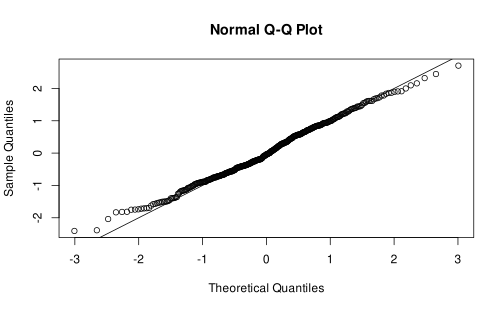
Example with the teddy dataset, quantile residuals
qr <- statmod::qresiduals(fit_teddy)
qqnorm(qr)
abline(0,1)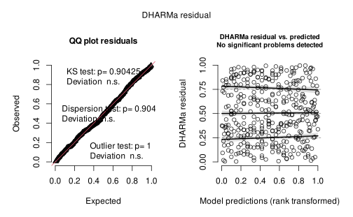
Example with the teddy dataset, quantile residuals
plot(DHARMa::simulateResiduals(fit_teddy))Example with the teddy dataset, binned residuals
Gelman and colleagues Gelman & Hill (2006) proposed a type of residuals called binned residuals to solve the problem of the previous plot for Binomial GLMs:
- divide the fitted values into \(n\) bins. The number is arbitrary but we need each bin to have enough observation to compute a reliable average
- calculate the average fitted value and residual for each bin
- for each bin we can compute the standard error as \(SE = \frac{\hat p_j (1 - p_j)}{n_j}\) where \(p_j\) is the average fitted probability and \(n_j\) is the number of observation in the bin \(j\)
- Then we can plot each bin and the confidence intervals (e.g., as \(\pm 2*SE\)) where ~95% of binned residuals should be within the CI if the model is true
Example with the teddy dataset, binned residuals
We can use the arm::binnedplot() function to automatically create and plot the binned residuals:
plot(performance::binned_residuals(fit_teddy))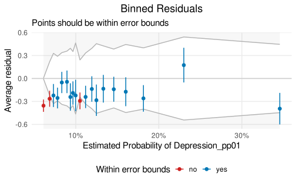
Plotting influence measures
plot(cooks.distance(fit_teddy))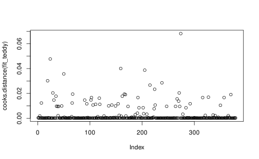
Plotting influence measures
car::dfbetaPlots(fit_teddy) # no intercept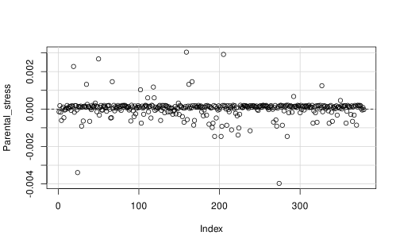
References
Dunn, P. K., & Smyth, G. K. (1996). Randomized Quantile Residuals. Journal of Computational and Graphical Statistics: A Joint Publication of American Statistical Association, Institute of Mathematical Statistics, Interface Foundation of North America, 5, 236–244. https://doi.org/10.1080/10618600.1996.10474708
Dunn, P. K., & Smyth, G. K. (2018). Generalized Linear Models With Examples in R. Springer.
Gelman, A., & Hill, J. (2006). Data Analysis Using Regression and Multilevel/Hierarchical Models. Cambridge University Press. https://doi.org/10.1017/CBO9780511790942
Gelman, A., Hill, J., & Vehtari, A. (2020). Regression and Other Stories. Cambridge University Press. https://doi.org/10.1017/9781139161879
McFadden, D. (1987). Regression-based specification tests for the multinomial logit model. Journal of Econometrics, 34, 63–82. https://doi.org/10.1016/0304-4076(87)90067-4
Tjur, T. (2009). Coefficients of Determination in Logistic Regression Models—A New Proposal: The Coefficient of Discrimination. The American Statistician, 63, 366–372. https://doi.org/10.1198/tast.2009.08210